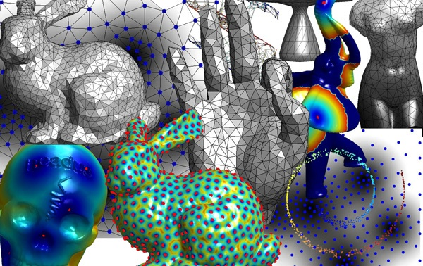

|  |
This course is an introduction to the computational theory of manifolds. Manifold models arise in various area of mathematics, image processing, data mining or computer science. Surfaces of arbitrary dimension can be used to model non-linear datasets that one encounters in modern data processing. Numerical methods allow to exploit this geometric non-linear prior in order to extract relevant information from the data. These methods include in particular local differential computations (related to the Laplacian operator and its variants) and global distance methods (related to geodesic computations). In this course, you will learn how to perform differential and geodesic computations on images, volumes, surfaces and high dimensional graphs.
The course includes a set of Matlab experiments. These experiments give an overview of various tasks in computer vision, image processing, learning theory and mesh processing. This includes computation of shortest paths, Voronoi segmentations, geodesic Delaunay triangulations, surface flattening, dimensionality reduction and mesh processing.
One should copy/paste the provided code into a file named e.g. tp.m, and launch the script directly from Matlab command line > tp;. Some of the scripts contain "holes" that you should try to fill on your own.
| 0 - Basic Matlab instructions. | |||
| 1 - Active contour and level sets. | PDF |
PPT |
|
| 2 - Front propagation in 2D and 3D. | |||
| 3 - Geodesic computation on 3D meshes. | |||
| 4 - Differential Calculus on 3D meshes. | |||
| 5 - High Dimensional Data Processing. |
Copyright © 2006 Gabriel Peyré